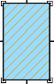
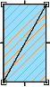
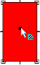
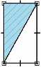

Refill a modified boundary
When you change a filled boundary by drawing another element, the fill does not automatically update to fit the new boundary.
-
In 3D environments, use the mouse to highlight a plane that contains the closed sketch or boundary that you want to refill, and then press F3 to lock it. Otherwise, skip to step 2.
To learn other ways you can lock a sketch plane, see the Help topic, Lock or unlock a sketch plane.
-
Click the Select tool
 .
. -
If displayed, select the fill handle inside the fill that you want to change. Otherwise, click inside the filled area that you want to change.
Tip:Fill handles are not displayed in 3D environments.
-
On the Fill command bar, click Redo Fill to apply the fill to the new boundary.
|
Fill the original boundary. |
 |
|
Draw a new element that modifies the original boundary. |
 |
|
Use the Select Tool to select the fill handle, or click inside the region to select it. |
 |
|
Click the Redo Fill button. |
 |
-
The insertion point of the original fill dictates which side of the modified boundary is refilled.
-
You also can refill an area by dragging the fill handle to the new area.
How do I
Place a fillFormat a fill
Learn more
Applying colors and patterns to closed boundariesLook up more details
Fill commandFill command bar
Fill Properties dialog box